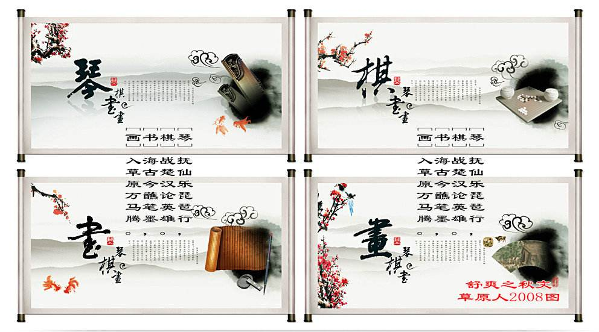

中国分化博大精深，包罗万象：
包含琴棋书画，礼乐射御书数。。。

琴棋书画
文房四宝

琴：笛子、二胡、古筝、箫、鼓、古琴、琵琶。
棋：中国象棋、中国围棋，对弈、棋子、麻将、棋盘等
书（书法、篆刻）：中国书法、篆刻印章、文房四宝（毛笔、墨、砚台、宣纸）、木版水印、甲骨文、钟鼎文、汉代竹简、竖排线装书、汉字等
画（绘画）：中国画（中国绘画）：中国帛画和中国国画（包括：山水画、花鸟画、人物画等古代中国画，写实中国画与写意中国画的现代中国画，中国流艺术的当代抽象国画）。其他还有：石刻浮雕画、装饰内画、敦煌壁画等，以及中国抽象油画等。
十大名曲：《高山流水》、《广陵散》、《平沙落雁》、《梅花三弄》、《十面埋伏》、《夕阳箫鼓》、《胡笳十八拍》、《汉宫秋月》、《阳春白雪》、《渔樵问答》。
十二生肖：鼠、牛、虎、兔、龙、蛇、马、羊、猴、鸡、狗、猪
传统文学：远古神话、《诗经》、汉乐府、南北朝民歌、楚辞、孙子兵法、三十六计、先秦诗歌、汉赋、唐诗、宋词、元曲，明清小说、 四大名著等
传统思想：老庄的道家思想、儒家思想、佛家思想、兵家思想等
传统节日：元宵节、寒食节、清明节、端午节（粽子、赛龙舟、屈原）、中秋节、重阳节、腊八节（大年三十、红包、守岁、团圆饭）、除夕、春节（元日）为代表等
中国戏剧：昆曲、豫剧、湘剧、京剧、皮影戏、越剧、川剧、黄梅戏、京戏脸谱、地方戏等
中国建筑：长城、牌坊、园林、寺院、钟、塔、庙宇、亭台楼阁、井、石狮、民宅、秦砖汉瓦、兵马俑、故宫（紫禁城）、颐和园、布达拉宫、平遥古城、乔家大院、苏州园林、杭州园林、十里长亭、长城、天坛、鸟巢、水立方等
汉字汉语：汉字、汉语、对联、谜语（灯谜）、歇后语、熟语、成语、射覆、酒令等
传统中医：中医、中药、《黄帝内经》、《针灸甲乙经》、《脉经》、《本草纲目》、《千金方》等
宗教哲学：佛家、道家、儒家、阴阳家、五行、罗盘、八卦、司南、法宝、算命、禅宗；烧香、拜佛、蜡烛等
民间工艺：剪纸、风筝、中国织绣（刺绣等）、中国结、泥人面塑、龙凤纹样（饕餮纹、如意纹、雷纹、回纹、巴纹）、祥云图案、凤眼、千层底、檐、鹫等
中华武术：南拳：咏春拳、Wing Tsun、洪拳、八卦掌、蔡李佛拳等；北腿、少林、武当、峨嵋、崆峒、昆仑、点苍、华山、青城、嵩山等
地域文化：中土文化、江南文化、江南水乡、塞北岭南、大漠风情、蒙古草原、天涯海角、中原等
民风民俗：礼节、婚嫁（红娘、月老）、丧葬（孝服、纸钱）、祭祀（祖）；门神、年画、鞭炮、饺子等
衣冠服饰：汉服（汉族民族服饰）、绣花鞋、老虎头鞋、伪唐装（满族马褂）、旗袍（满族）、肚兜（满族）、斗笠、帝王的皇冠、皇后的凤冠、丝绸。
四大雅戏：花鸟虫鱼、牡丹、梅花、桂花、莲花、鸟笼、盆景、鲤鱼等
四大发明：火药、指南针、造纸术、活字印刷术
动物植物：花鸟虫鱼、牡丹、梅花、桂花、莲花、鸟笼、盆景、鲤鱼；龙、凤、狼、麒麟、虎、豹、鹤、龟、大熊猫...；梅兰竹菊：梅花，兰花，竹子，菊花。松、柏等
器物随身：玉（玉佩、玉雕..）瓷器、景泰蓝、中国漆器、彩陶、紫砂壶、蜡染、古代兵器（盔甲、大刀、宝剑等）、青铜器、古玩（铜钱等）、鼎、金元宝、如意、烛台、红灯笼（宫灯、纱灯）、黄包车、鼻烟壶、鸟笼、长命锁、糖葫芦、铜镜、大花轿、水烟袋、芭蕉扇、桃花扇等
饮食厨艺：出门七件事：柴，米，油，盐，酱，醋，茶；酒、茶道；吃文化、中国菜、八大菜系（鲁、 川、 粤、 闽、 苏、 浙、湘、徽）、饺子、团圆饭、年夜饭、年糕、中秋月饼、筷子；鱼翅、熊掌等
工具技艺：算盘珠算、纺织技术等
艺术文化：民乐、曲艺、三星堆文化等
传统美德：孝敬父母、岁寒三友、诚实守信、尊师重教等
中国文物：后母戊大方鼎、越王勾践剑、良渚美玉、长信宫灯、秦始皇陵兵马俑、曾侯乙编钟、金缕玉衣、铜奔马（马踏飞燕）、永乐大钟、古代钱币、敦煌莫高窟等
中国爱的文化：博爱、兼爱、仁爱。

中国文化是华夏文明为基础，充分整合全国各地域和各民族文化要素而形成的文化

中国文化的影响，从古至今，都是被学习的榜样。古时更有周边国家派使者学习我国文化，可见我国文影响深远。